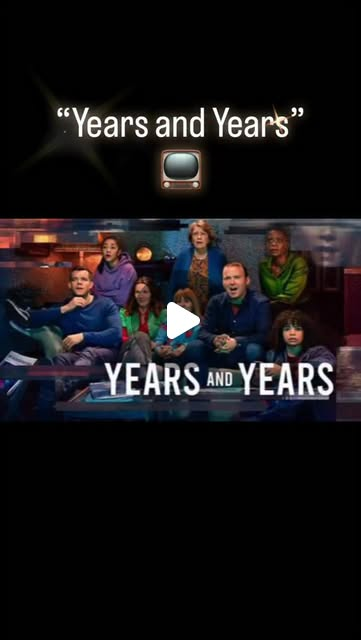

Instagram Reel

Review: Years and Years
video transcript (enriched by ClaudeClaw)
Summary
[CAPTION]
Review: Years and Years
Russell T Davies’ “Years and Years” begins as an intimate family drama and gradually expands into something far more unsettling. Spanning over a decade, the series follows an ordinary Manchester family as political decisions, technological shifts, and social fra...
[CAPTION]
Review: Years and Years
Russell T Davies’ “Years and Years” begins as an intimate family drama and gradually expands into something far more unsettling. Spanning over a decade, the series follows an ordinary Manchester family as political decisions, technological shifts, and social fractures quietly but relentlessly reshape their lives. What starts with casual conversations around the dinner table soon escalates into moments that feel disturbingly close to home.
When the series first aired in 2019, it landed in the shadow of Brexit uncertainty, rising populism, and growing distrust in institutions. At the time, it felt like a sharp warning, exaggerated perhaps, but rooted in very real anxieties about where politics, media, and technology were heading. Watching it now, those warnings feel less speculative and more like an uncomfortable mirror. The show’s exploration of misinformation, authoritarian drift, financial instability, and the erosion of human rights resonates even more strongly in today’s global political climate.
What makes “Years and Years” so powerful is its emotional grounding. Amid the chaos, it never loses sight of the people at its centre, their fears, compromises, hopes, and moral dilemmas. The performances are quietly devastating, particularly as the characters are forced to adapt, survive, or resist in ways they never imagined. The writing balances outrage with empathy, reminding us that political change isn’t abstract, it’s lived, day by day, by ordinary people.
This is not an easy watch, but it’s an essential one. “Years and Years” doesn’t just ask where we might be heading; it asks how much we’re willing to accept before we realise we’ve gone too far. Years on, its relevance hasn’t faded, it’s only grown sharper.
#YearsAndYears #LGBTQSeries #PoliticalDrama
[VIDEO]
God knows we need to shake things up. So I propose that in order to vote, every British citizen must take an IQ test. She just say, are you saying that some people are too stupid to vote? I've got you listening now, haven't I? Things were okay a few years ago. Surprise! No, I don't know what to worry about first. I'm only just beginning! What's it gonna be like for you? We used to think the news was boring. Turns out we were born in a pause. I love it. The whole system's in pieces. So nice to have you back. You met my sister once. Was I nice? What sort of world are we in? Hello, mammy. We will change forever. I thought that. Don't you dare. It's a terrible, terrible world. But I want to see every second of it. This country has never been more magnificent. I look ahead and see glory. With me. You don't mind, do you? No.
View original on Instagram Reel →